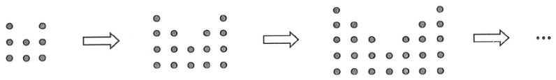

Step 1: the 1st pattern has $T(1)=8$ dots.
In the figure, the 1st pattern consists of 8 dots. For any positive integer $n$, the $(n+1)$th pattern is formed by adding $(2n+6)$ dots to the $n$th pattern. Find the number of dots in the 7th pattern.

Let $T(n)$ be the number of dots in the $n$th pattern.
Given: $T(1)=8$ (1)
And: $T(n+1)=T(n)+(2n+6)$ for every positive integer $n$ (2)
Using (2) with $n=1,2,3,4,5,6$, the number of dots added each time is:
| $n \to n+1$ | 1 → 2 | 2 → 3 | 3 → 4 | 4 → 5 | 5 → 6 | 6 → 7 |
|---|---|---|---|---|---|---|
| $2n+6$ | 8 | 10 | 12 | 14 | 16 | 18 |
So to reach the 7th pattern we must add $\;8+10+12+14+16+18\;$ dots to $T(1)$.
$$T(7)=T(1)+8+10+12+14+16+18$$ $$=8+8+10+12+14+16+18$$
$$T(7)=8+(8+10+12+14+16+18)$$ $$=8+\frac{6}{2}(8+18)=8+3\times 26=8+78=86$$
(Sum of an AP: number of terms $=6$, common difference $=2$.)
So the 7th pattern has $86$ dots, which matches option C.
(Quick check with the recurrence: $T(2)=16$, $T(3)=26$, $T(4)=38$, $T(5)=52$, $T(6)=68$, $T(7)=86$.)